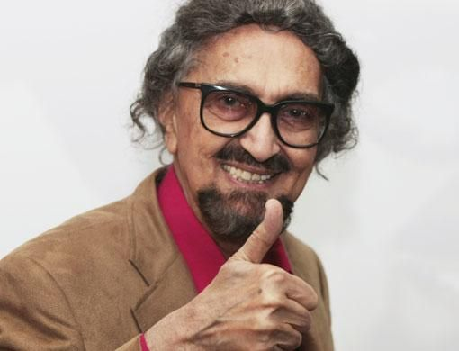

Brandvertising with Alyque Padamsee

Read the article about this event on Gulf News or here, at Global Konnekt
A Man in Full

April 02, 2009 22:46
When interviewing a multi-faceted personality like Alyque Padamsee one thing is a given – it will not be a monotonous experience. You can rest assured that the meeting will be enthralling – you will get all the right quotes, it will be punctuated with hyperboles, wild gestures and amazing expressions that create a certain sense of drama, to say the least; it will provide an interesting insight into the man and you will begin to see him in a new light. And the David Ogilvy of Indian advertising did not disappoint....
"I hate the status quo; there should be a sense of excitement in what I do," he once said, and all his life Alyque Padamsee, ad man, theatre personality, actor, communications consultant and now a social activist, has lived by that belief. Whether it is his visionary approach to advertising, his maverick personal life, the way he has defined English theatre in India or his views on consumer behaviour, Padamsee has rarely if ever drifted away from the media's spotlight.
In Dubai recently to present a lecture at a seminar on brandvertising, Padamsee spoke exclusively to Friday on, among other things, advertising, theatre and what propels him to push the limits of creativity that he himself has defined over the decades.
Seated in the comfortable environs of the Crowne Plaza Hotel, Padamsee decides that his first task during the interview should be to demystify the term brandvertising.
Actually the term brandvertising is not new. Padamsee invented this term in the 1990s, but did not receive much attention from his contemporaries. Now the term has come to describe the way advertising (or communication, as Padamsee is fond of referring to it) is practised around the world today. "Brandvertising,'' says the ad man, "is the discipline of integrating a multitude of communication options, beyond advertising – to grow brands with more economic leverage than ever before.
Branding ideas will run through communication vehicles as diverse as interactive outdoor signs, consumer communities on the internet and shopping mall experiences.
"When you're a large corporate house, it's easy to fall back on
brand awareness or brand management when it comes to
rolling out a new campaign... and that can lead to laziness and stagnation," warns Padamsee.
"They [advertisers/clients] figure that as long as they're getting the brand name out there and into the public eye they are moving the brand forward. However, companies who stay on the top of their game are there not because they are willing to sit back and reap the rewards of previous successes, but because they are willing to push the limits of what's possible with brandvertising. They are not just on the cutting edge; they're defining it."
The man with a goatee does not pause: "The words 'typewriter' and 'advertising' should, I believe, be left in the 20th century along with advertising's archaic form of remuneration. Imagine trying to work in this networked world with just a typewriter. Imagine trying to establish long-term relationships with consumers with just advertising.
"It is all about the synergistic effect of brand communication integrated in every marketing tool." In simple terms, what he means is: Move over advertising. Welcome, brandvertising. Of course, he said it more than a decade ago, but then isn't this the man who has always been ahead of his time?
Padamsee and Lintas
For those who came in late, Padamsee is an advertising legend in India who was responsible for creating some of the most talked about ad campaigns including those for Liril, Lifebuoy and Surf, to name just a few. Not only were his ads praised for their creative brilliance but they also did what according to him an ad should do: sell the product or service advertised. He is credited with turning the loss-making Lintas (which is now known as Lowe) into one of the top ad agencies in India.
The story goes that when he took over the company, funds were scarce. But Padamsee wanted to create a feel-good image for clients when they visited his offices. "I decided to renovate the bathrooms at the office for that was the only thing we could afford to at the time," he recalls. The word spread that Lintas was doing well ("if the company can set aside funds to redo bathrooms, they must be doing really well'' was the industry grapevine). And since nothing is more attractive than success – or even the illusion of it – the refurbished restrooms were instrumental in helping herald new businesses leading to a complete turnaround in the agency's fortunes. A quirky approach to management, indeed.
Padamsee's brand of advertising
At the risk of sounding cliched, I ask Padamsee what he thinks is good advertising. "Advertising is the quickest and cheapest way to inform the public about the benefits of your product," he says in his mesmerising sonorous actor's voice. "A great ad is one that creates great sales, and if it
wins awards, then that is the icing on the cake."
Then what role does creativity play in advertising?
"In my definition, advertising is only about creativity for the purpose of selling," comes the blunt answer. "We are not competing with artists. Our job is to sell our clients' products. We may be very creative but if we fail to sell our clients' products then [the ad that we created] is not a good ad. Some agencies have blended creativity and saleability nicely. But to me, a great ad is one that generates great sales.
"A lot of advertising today is certainly noticeable as ad agencies try to break through the 'clutter' but unfortunately often at the end of the commercial, you don't know what on earth they are selling, though you remember the ad which was great fun," he says. "Sometimes, even if you remember the brand, you don't find any reason, apart from humour, to choose that brand. It's good to have funny ads but we must remember that we create comic, serious or dramatic ads only to sell some products.''
Padamsee drives home the point of an ad: "[To sell products]... this is the only reason why advertising exists.'' If the product advertised does not sell, then the agencies lose the account, he says.
The truth, with a little drama and a lot of colour. Quite like the ads he's famous for ideating. Mention the brand names Liril, Surf, Cherry Blossom in media or advertising circles and the first name that comes to mind is that of Padamsee – this though the ads featured way back in the '80s. In fact Padamsee is still chuffed talking about those campaigns today.
The moment I mention Liril, Padamsee begins humming the jingle that accompanies the girl-under-the-waterfall ad. "Ah yes, the Liril soap ad," he says after he's done with the tune. "not only does it offer you freshness but a sense of freedom as well. The girl is not just having a regular bath. The girl under the waterfall symbolises a bathing experience that can be carefree.''
The market survey we conducted before we conceptualised the ad revealed some interesting things, he says. "We found that the average Indian woman is surrounded by her in-laws, husband, children and has never-ending demands on her time. The 10 minutes she spends in the shower are the only 10 minutes that are her own. It's the one time she can daydream. The ad was a visual depiction of that average woman's dream.
"The ad was so compelling [and helped sell millions of pieces of the soap] that it remained unchanged for almost three decades." And what's the lesson here? "Well, let me put it in a simplistic way. You have to go back to what the product really offers the consumer. That's when the product sells."
So, if the sole motive of an ad is to create brand loyalty then how do we get people to switch? "I believe, and this is a personal belief based on my many decades as a communications man, that the idea central to advertising is that if you want people to change, you've got to offer them some kind of incentive. When we were trying to move people away from washing their clothes with laundry soaps to Surf detergent powder, we had to educate them about what a bucket wash was. Surf wash was a big idea. With Lifebuoy for example, we had to tell people, especially the rural folk, that this was the healthy, hygienic alternative to bathing with a mud mix. That's how the brand built its enormous franchise and found its way right into the remote areas of India. It isn't just a product made by a company, it is an idea of hygiene."
In all of this what is the role of a copywriter?
"A good copywriter is one who doesn't just write good copy but who thinks up great ideas for advertising his client's brand," says Padamsee. Pause. I wait. He says nothing more on the issue. I am not disappointed. That one sentence sums up the job description of a copywriter.
The role of advertising agencies today
"I think the agencies of today should be a combination of strategy, execution and marketing,'' says Padamsee. "And I will go one step further and say they can provide help in product formulation. So if we take that approach, then the process begins with the formulation of the product, to positioning, to the strategy, to the creation of the advertising, to the placement of the advertising and more important, placement of the product in the marketplace.''
Another aspect of advertising Padamsee is gung-ho about is the internet. "It's a great medium," he says.
"When the usage of the net becomes widespread, everyone will become net sensitive. Of course, the key is to make buying on the net cheaper than taking a bus to a retail shop.
And once that happens the whole ballgame will change.
Retail shops will have to become entertainment centres to attract customers. And advertising will definitely be more interactive. There will be a direct correlation between advertising and sales which will happen at the same time. It will be like one massive [high-end store] catalogue."
The ad scene in India
But Padamsee is not very complimentary about the current advertising scenario in India. "Today's ads are all flash and very little substance," he says dismissively. "Instead of advertising it has become 'advertainment'!" Which is anathema to him. "In advertising, you are like an athlete, always running against your competitors. Most of the ad agencies are very complacent. They should remember: the client is the person who pays your bills and he is the one who has created the product."
Padamsee and his penchant for drama
Theatre. The word lights up his face like nothing else. He has more than 50 full-length plays – including Tuglak and Evita – to his credit. He's launched many careers on stage, including that of his third wife, Sharon Prabhakar's (the two are now separated). Padamsee attributes his success in advertising
to his grounding in English theatre. "My training in theatre helped me a lot in advertising. In theatre, you have to play different roles. Advertising is somewhat similar." And then a pause: "Everything I do, including my relationships, are influenced by the theatre."
That gives me the leeway to ask him about his family. "I would call myself a damn good father… but a lousy husband!" he quips. The fact that he has shared a healthy relationship with with his ex-wives, (the late Pearl Padamsee, a well-known theatre personality and Dolly Thakore, a mediaperson) and his children explains it all.
Back to theatre: "In theatre, you have to put yourself in another person's shoes and imagine what he/she would feel in a situation like the one in the script," he says. "In advertising you do the same. When I created an ad for the Indian woman for Liril, I put myself in the shoes, or rather slippers, of an Indian housewife.
"I imagined how she would love to escape from all the chores and responsibilities that were burdening her. That's why I gave her a fantasy escape route – a typical Bollywood-
like waterfall. That was an instance of my theatre experience helping in advertising."
Theatre is truly Padamsee's passion. Even today, his evenings, if he's in Mumbai, are spent rehearsing plays. "I go out for these rehearsals because I just love theatre." So much so that he even recommends it to MBA students. "Spend a year in theatre. It offers you good training and teaches discipline."
His only foray into cinema, playing the role of Mohammad Ali Jinnah in Richard Attenborough's Gandhi, was very successful, but he did not take up the other offers he received because "they just did not interest me".
What did interest him though was the prospect of making Tuglak, a play scripted by Girish Karnad, into a film. He was keen to cast an actor who had a great deal of star power to do the lead role and thus approached Amitabh Bachchan, the numero uno of Bollywood at the time. Bachchan tentatively agreed to do the film but unfortunately for Padamsee, the star met with a near fatal accident on the sets of Coolie soon after. When he got better, Padamsee went back to Bachchan but the star backed out from making the film stating that it was too much of a risk to make a comeback with a film that was not a typical Bollywood film. "And that was it. I never tried again."
The party animal
We are definitely warming up now, so
I ask as blithely as possible: is it true that he is a complete party animal even today? "Yes, I'm still very much a party animal," he says, guffawing. "Dancing in discos is the only exercise I seem to enjoy!" Would he say he's lived a full life? Does he have any regrets?
"I am a positive person: I believe that age is in the mind," he says. "A cynical attitude never helps. I follow the path of the heart." A mellow Padamsee? Now that is something you aren't going to see!
Shiva Kumar Thekkepat is feature writer, Friday